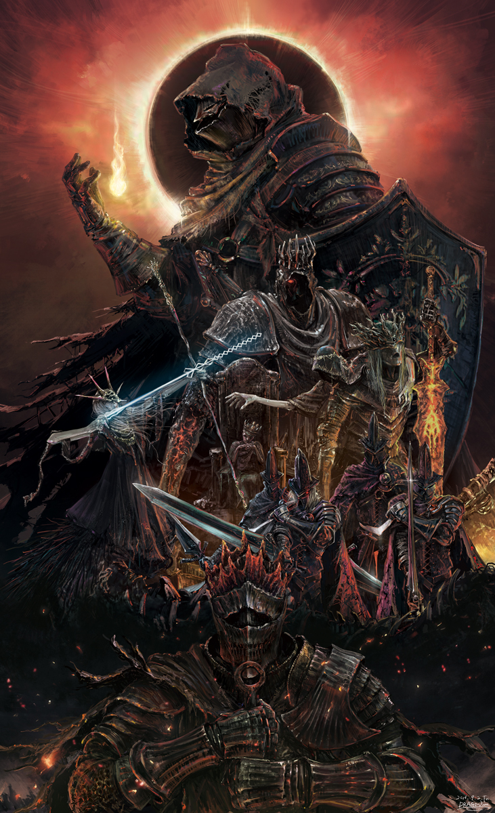
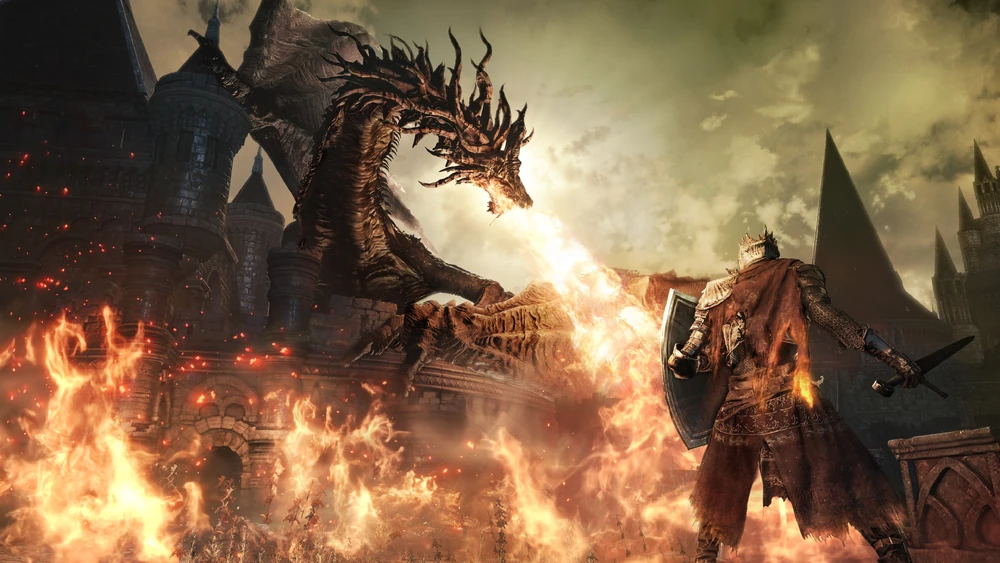
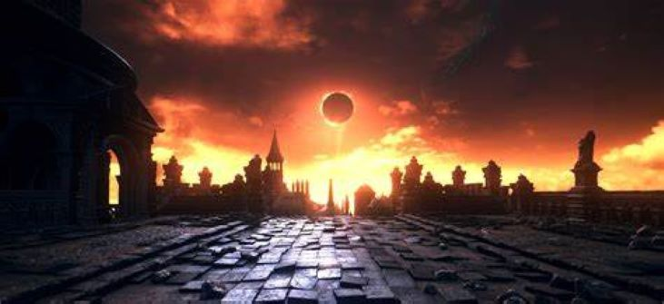

Dark Souls
Dark Souls III es un juego de rol de acción de 2016 desarrollado por FromSoftware y publicado por Bandai Namco Entertainment para PlayStation 4, Xbox One y PC. Tercera y última entrega de la saga Dark Souls, se juega en una perspectiva en tercera persona, y los jugadores tienen acceso a varias armas, armaduras, magia y consumibles que pueden usar para luchar contra sus enemigos. Hidetaka Miyazaki, el creador de la saga, volvió para dirigir el juego tras dejar las tareas de desarrollo de Dark Souls II en manos de otros.
Dark Souls III fue un éxito comercial y de crítica, siendo calificado por los críticos como una conclusión digna y adecuada para la saga. Distribuyó más de tres millones de copias en sus primeros dos meses y más de 10 millones para 2020. También fueron lanzadas dos expansiones de contenido descargable (DLC), Ashes of Ariandel y The Ringed City. Dark Souls III: The Fire Fades Edition, una edición que contiene el juego base y ambas expansiones, fue lanzada en abril de 2017.
Expansiones
Dark Souls III cuenta con dos expansiones de contenido descargable (DLC):
Ashes of Ariandel: Introduce una nueva área, enemigos, armas y un enfrentamiento con jefes memorables en el helado mundo pintado de Ariandel.
The Ringed City: Explora los misterios finales del mundo de Dark Souls, incluyendo enemigos desafiantes y una conclusión épica para la saga.
Aspectos técnicos
El juego utiliza el motor gráfico mejorado de FromSoftware, ofreciendo entornos detallados y atmósferas inmersivas. Su banda sonora, compuesta por Yuka Kitamura y otros, resalta los momentos épicos y emocionales, especialmente en las batallas contra jefes.
Recepción
El juego fue aclamado por su diseño artístico, dificultad justa pero implacable, y su capacidad para cerrar la trilogía de manera satisfactoria. Se considera un clásico moderno en el género de los juegos de rol de acción, con una comunidad activa que continúa explorando sus secretos y desarrollando teorías sobre su lore.

Jugabilidad
Dark Souls III conserva la fórmula básica de la serie, con combates desafiantes, exploración profunda y gestión de recursos como estus (pociones curativas). Algunas características destacadas son:
Velocidad de combate: Es más rápido que sus predecesores, influenciado por Bloodborne, otro título de FromSoftware.
Variedad de armas y habilidades: Cada arma tiene movimientos únicos y habilidades especiales conocidas como Artes de Armas.
Sistema de progresión: Los jugadores pueden personalizar sus estadísticas, armas y equipo para adaptarse a diferentes estilos de juego.
Enemigos y jefes: El juego presenta una amplia gama de enemigos aterradores y jefes con diseños únicos y mecánicas desafiantes.
Al igual que en Dark Souls II, está disponible el viaje rápido mediante hogueras desde el comienzo del juego siempre y cuando el personaje del jugador coloque la Espada en espiral en el Santuario de Enlace
El jugador puede reasignar los niveles de las estadísticas, así como re-configurar el personaje con Rosaria, madre del renacer en la Catedral de la Oscuridad hasta cinco veces por partida.
El NJ+ (Nuevo Juego+) regresa. Después de terminar el juego, el jugador tiene la opción de iniciar una nueva partida inmediatamente o en un momento posterior a través de la hoguera en el Santuario de Enlace. El Nuevo Juego+ es opcional. El jugador conservará todo el equipo, atributos del personaje y objetos consumibles con la excepción de los objetos clave. La dificultad del juego se incrementa en cada NJ+, pero esto solo aplica hasta el NJ+7.
La degradación de las armas es casi inexistente.
Se ha añadido un sistema de Puntos de Concentración (PC), similar al encontrado en Demon's Souls, esto aplica a las habilidades de las armas y el lanzamiento de conjuros. La barra de PC puede ser rellenada descansando en una hoguera o bebiendo del Frasco de estus de ceniza.

Historia y ambientacion
El juego tiene lugar en el reino ficticio de Lothric, un mundo al borde del colapso debido al ciclo de reencendido y extinción de la Primera Llama, que mantiene el equilibrio entre la luz y la oscuridad. En este contexto, el jugador asume el papel del "No-Muerto Sin Fuego", un ser resucitado para evitar el fin del mundo al enlazar la llama, enfrentándose a los Señores de la Ceniza, antiguos héroes que una vez mantuvieron la llama viva pero que ahora han abandonado su deber.
La narrativa del juego es intencionadamente críptica, presentada a través de diálogos enigmáticos, descripciones de objetos y los entornos. Esto fomenta la exploración y el análisis por parte de los jugadores para entender los eventos y la mitología del mundo.
